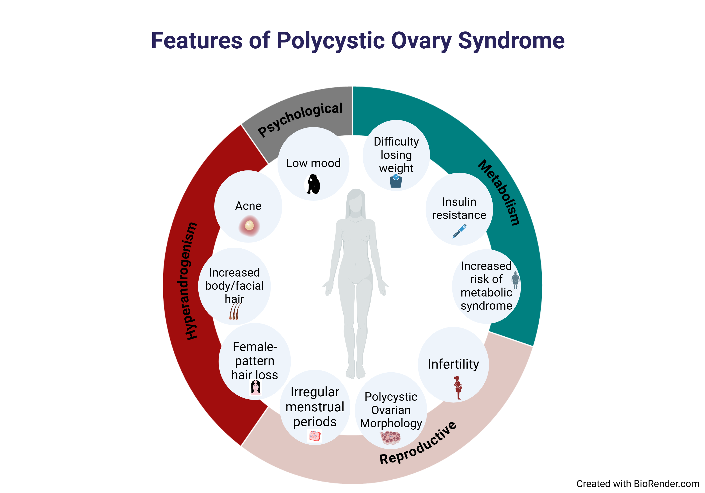
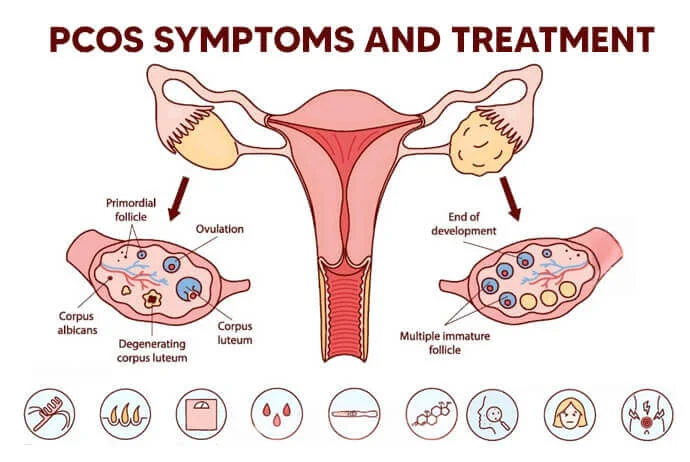
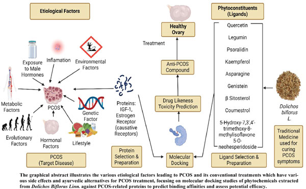

Department of Bioengineering | Semester II | Indian Knowledge Systems
Modern endocrinology identifies PCOS via the Rotterdam Criteria. In IKS, this is the vitiation of Artava Vaha Srotas. This diagram illustrates the systemic intersection of hyperandrogenism and metabolic syndrome.


IKS defines metabolic failure as Agni-mandya. As seen in the anatomical diagram, the "multiple immature follicles" represent the physical manifestation of Kapha-induced clogging.
Biomechanical research proves that specific Asanas regulate the HPO axis. These poses are targeted physiological interventions to clear Srotas (channels).
Our study uses Molecular Docking to prove that traditional IKS compounds (Ligands) have high binding affinity with hormone receptors.
